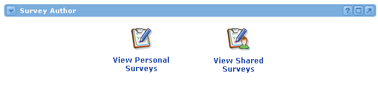

The Academus Survey features are delivered by three channels:
Users can create surveys and polls to gather information from others in the community. These surveys can be authored in the portal environment (through the Survey Author Channel), or they can be imported as a pre-authored XML file.
Survey authors have the ability to limit the audience with whom they share the survey. This helps glean information from a specifically sought-after pool of respondents.
A survey's lifespan exists in two stages: authoring and distribution. During the authoring stage, no one will be able to answer the questions within the survey. Once the questions have been finalized, the author can choose to distribute the survey to a select group of users. Once distributed, surveys cannot be edited.

Survey Types
There are two types of surveys: Personal and Shared. A user who authors a Personal Survey is the only one who can edit the survey. In addition, only the author of a Personal Survey can view the survey's results. A Shared Survey, on the other hand, can be edited by anyone who is able to view it. Likewise, shared survey results will be visible to all users with access to the Survey Author Channel